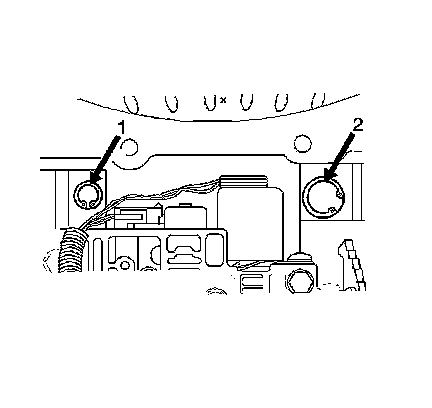
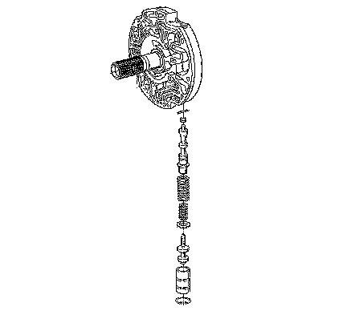

4L80-E/4L85-E - Automatic Transmission
Pressure Regulator Replacement
Tools Required
J 36850 Transjel(R) Lubricant
Removal Procedure
1. Raise and suitably support the vehicle. Refer to Lifting and Jacking the Vehicle.
2. Remove the transmission filter.

Caution: Valve springs can be tightly compressed. Use care when removing retainers and plugs. Personal injury could result.
3. Remove the reverse boost valve bushing retainer ring (2).

4. Remove the following from the reverse boost valve cylinder:
^ The reverse boost valve bushing
^ The reverse boost valve
^ The pressure regulator spring retainer
^ The pressure regulator spring
^ The pressure regulator valve
^ The reverse boost valve bushing
Installation Procedure
1. Install the pressure regulator valve using J 36850.
2. Pre-assemble the following parts:
^ The reverse boost valve bushing
^ A new reverse boost valve
^ A new pressure regulator spring retainer
^ The added isolator pressure regulator spring
^ The pressure regulator spring
3. Install the pre-assembled parts into the pump bore.
4. Install the reverse boost valve bushing retainer ring while holding the reverse boost valve bushing in place.
Ensure the retainer ring (2) is in the groove.
5. Install the transmission filter.
6. Fill the transmission to the proper level with DEXRON(R) VI transmission fluid. Refer to Transmission Fluid Checking.
Important: It is recommended that transmission adaptive pressure (TAP) information be reset.
Resetting the TAP values using a scan tool will erase all learned values in all cells. As a result, the engine control module (ECM), powertrain control module (PCM) or transmission control module (TCM) will need to relearn TAP values. Transmission performance may be affected as new TAP values are learned.
7. Reset the TAP values. Refer to Transmission Adaptive Functions.